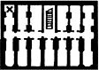
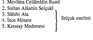
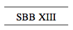

35. BÖLÜM
Kongre Binası’nın alt bodrumuna inen ahşap merdivenler, Langdon’ın şimdiye dek kullandığı diğer merdivenler kadar dik ve basitti. Daha sık nefes alıyor, göğsünün sıkıştığını hissediyordu. Hava burada soğuk ve nemliydi. Langdon birkaç yıl önce Vatikan’daki Nekropolis’e inen merdivenleri hatırlamadan edemedi. Ölüler Şehri.
Anderson onun önünde fenerle yol gösteriyordu. Langdon’ı hemen arkasından takip eden Sato, ara sıra minik elleriyle sırtına dokunuyordu. Elimden geldiği kadar hızlı gidiyorum. Derin nefesler alan Langdon, iki yanından sıkıştıran duvarları düşünmemeye çalıştı. Bu dar, merdivenli yola omuzları güçlükle sığıyor, çantası duvara sürtünüyordu.
Sato arkasından, “Belki de çantanızı yukarıda bıraksanız iyi olurdu,” dedi.
“Ben iyiyim,” diye cevap veren Langdon’ın, çantasını gözünün önünden ayırmaya hiç niyeti yoktu. Peter’ın verdiği küçük paketi hayalinde canlandırdı ama Kongre Binası’nın bodrumundaki herhangi bir şeyle nasıl bir ilgisi olabileceğine aklı ermedi.
Anderson, “Birkaç adım daha kaldı,” dedi. “Neredeyse geldik.”
Merdivenlerdeki tek lambanın aydınlığından uzaklaşan grup, karanlığa inmişti. Son basamaktan aşağı adımını atan Langdon, ayaklarının altındakinin toprak olduğunu hissetti. Dünyanın merkezine seyahat. Sato onun arkasından geldi.
Şimdi fenerini kaldıran Anderson, etrafı kolaçan ediyordu. Alt bodrum, bodrum katından çok merdivenleri diklemesine kesen, fazlasıyla dar bir koridora benziyordu. Anderson ışığı sağa sola hareket ettirince, Langdon geçidin yaklaşık on beş metre uzunluğunda bir yer olduğunu gördü. İki yana da küçük, ahşap kapılar sıralanmıştı. Kapılar birbirine o denli yakındı ki, odalar üç metreden geniş olamazdı.
Anderson plana bakarken Langdon, ACME Deposu, Domatilla Yeraltı Mezarlığı’yla buluşuyor, diye düşündü. Alt bodrumdaki minik bölme, SBB13’ün yerini göstermek amacıyla X ile işaretlenmişti. Langdon bu planın on dört lahitli bir mozole -karşılıklı yedişer mezar- ile aynı olduğunu fark etti. Az önce indikleri merdivenin olduğu yer çıkarılmıştı. Toplamda on üç.

Amerika’daki “on üç” teorisyen, ABD Kongre Binası’nın altında on üç deponun bulunduğunu bilseydi bayram ederdi, diye düşündü Langdon. Bazıları, Birleşik Devletler Devlet Mührü’nde on üç yıldız, on üç ok, on üç piramit basamağı, kalkanın üzerinde on üç şerit, on üç zeytin yaprağı, on üç zeytin, annuit coeptis41 ve e pluribus unum42 kelimelerinde on üç harf bulunmasından kuşku duyuyordu.
Feneri tam karşılarındaki odaya tutan Anderson, “Boş görünüyor,” dedi. Ağır ahşap kapı ardına kadar açıktı. Işık, hiçbir yere çıkmayan bir koridoru andıran, dar -üç metre genişliğinde, dokuz metre derinliğinde- ve taş bir odayı aydınlatıyordu. Odada birkaç kırık sandıkla, buruşturulmuş ambalaj kâğıdından başka bir şey yoktu.
Anderson fenerin ışığını kapının üstündeki levhaya tuttu. Levha paslanmış olmasına rağmen yine de okunabiliyordu:

Anderson, “SBB4,” dedi.
Sato, “SBB13 hangisi?” diye sorarken, bodrumun soğuk havasında ağzından az da olsa buhar çıktı.
Anderson feneri koridorun güney ucuna çevirdi. “Şurada.”
Dar koridora göz atan Langdon tüylerinin diken diken olduğunu ve soğuğa rağmen terlediğini hissetti.
Kapılar topluluğunun arasından geçerken, uzun zaman önce terk edilmiş, kapıları yarı açık duran odaların hepsi birbirinin aynı görünüyordu. Yolun sonuna geldiklerinde Anderson sağa dönüp, SBB13’ün içini görmek için fenerini yukarı kaldırdı. Ama fenerin ışığı, ağır bir ahşap kapı tarafından kesilmişti.
Diğerlerinin aksine, SBB13 kapalıydı.
Bu kapı diğerleriyle tıpatıp aynı görünüyordu; ağır menteşeler, demir kapı kolu ve yeşermiş bir bakır levha. Kapının levhasındaki yedi karakter, Peter’ın avuç içinde yazanla aynıydı.

Langdon, lütfen kapı kilitli de, diye düşündü.
Sato tereddütle, “Açmayı dene,” dedi.
Polis şefi tedirgin görünse de uzanıp ağır kolu kavradı ve aşağı doğru itti. Kapının kolu yerinden kımıldamadı. Işığı bu kez kapının kilidiyle anahtar deliğine tuttu.
Sato, “Anahtarı dene,” dedi.
Anderson yukarıdaki giriş kapısının anahtarını çıkardı ama deliğe uymuyordu bile.
Sato alaycı bir tonla, “Acaba yanılıyor muyum?” dedi. “Güvenliğin acil bir durumda bu binanın her yerine girebilmesi gerekmez mi?”
İç çeken Anderson, Sato’ya baktı. “Efendim, adamlarım yedek anahtarı arıyorlar, ama...”
Başıyla kapı kolunun altındaki kilit aynasını göstererek, “Ateş et,” dedi.
O an Langdon’ın kalbi tekledi.
Sesi tedirgin çıkan Anderson boğazını temizledi. “Efendim, yedek anahtarla ilgili haber bekliyorum. Bu kapıya ateş ederek içeri girmek konusunda huzursuzum...”
“Belki CIA soruşturmasına engel olduğu için hapiste yatarken daha rahat edersin.”
Anderson, kadına kuşkuyla baktı. Uzun bir aradan sonra isteksizce ışığı Sato’ya verip, tabanca kılıfını açtı.
Daha fazla sessiz kalamayan Langdon, “Bekle!” dedi. “Bunu bir düşünün. Peter bu kapının arkasında ne olduğunu söylemek yerine sağ elini feda etti. Bunu yapmak istediğinize emin misiniz? Bu kapının kilidini açmak, bir teröristin taleplerine itaat etmek olacak.”
Sato, “Peter Solomon’ı geri istiyor musun?” diye sordu.
“Elbette, ama...”
“O halde onu elinde tutan adamın isteklerini yerine getirmeni tavsiye ederim.”
“Eski bir kapıyı açarak mı? Sizce kapı bu mu?”
Sato ışığı Langdon’ın yüzüne çevirdi. “Profesör, bunun ne halt olduğu konusunda hiç fikrim yok. İster bir depo, ister eski bir piramide giriş yolu olsun, niyetim onu açmak. Acaba yeterince anlaşıldım mı?”
Işıktan gözleri kamaşan Langdon, sonunda başını salladı.
Sato ışığı aşağı indirip, kapının antika kilidine yöneltti. “Şef? Devam edin.”
Plana hâlâ karşı olan Anderson, silahını çok yavaş bir şekilde çıkarıp, kilide şüpheyle baktı.
“Ah, Tanrı aşkına!” Sato’nun minik elleri uzanıp silahı ondan aldı. Feneri Anderson’ın şimdi boş duran avcuna sıkıştırdı. “Lanet ışığı kilide tut.” Silah eğitimi almış birinin rahatlığıyla tabancayı tutup, hiç vakit kaybetmeden emniyeti açtı ve kilide nişan aldı.
Langdon, “Dur!” diye bağırsa da çok geç kalmıştı.
Silah üç kez gürledi.
Langdon bir an için kulak zarının patladığını sandı. Aklını mı kaçırdı? Bu küçük yerde silah sesi sağır ediciydi.
Kurşunun paramparça ettiği kapıya ışık tutan Anderson da sarsılmış gibiydi.
Kilit mekanizması şimdi darmadağın, etrafındaki tahtalar ise unufak olmuştu. Kilit açılınca kapı aralandı.
Silahı öne doğru uzatan Sato, namlunun ucuyla kapıyı ittirdi. Kapı karanlığa doğru ardına kadar açıldı.
İçeri bakan Langdon karanlıktan başka bir şey göremedi. Bu koku da ne böyle? Karanlığın içinden alışılmadık, pis bir koku geliyordu.
Anderson eşikten içeri adımını atıp, ışığı yere tutarak toprak zemini dikkatle inceledi. Bu oda da diğerleri gibi dar ve uzundu. Taştan yapılmış duvarlar, buraya hapishane hücresi havası vermişti. Ama bu koku...
Işığı odanın içlerine kadar tutan Anderson, “Burada bir şey yok,” dedi. Sonunda zeminin bittiği yerde, feneriyle odanın karşı tarafındaki duvarı aydınlattı.
Anderson, “Aman Tanrım!...” diye bağırdı.
Hepsi aynı şeyi görüp, geriye doğru sıçradılar.
Langdon odanın en ucundaki yere inanamayan gözlerle baktı.
Ama dehşet verici bir şey de ona bakıyordu.